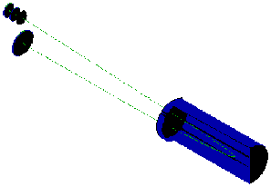
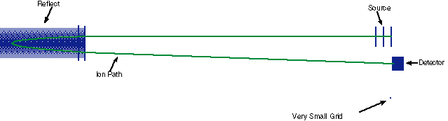
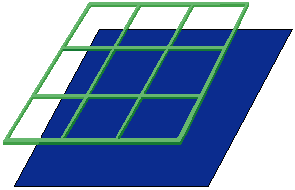
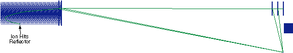
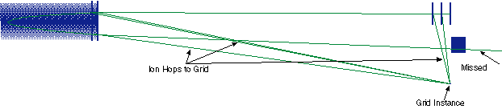
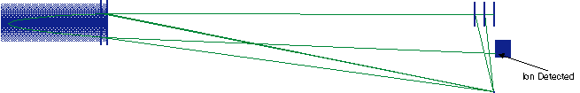
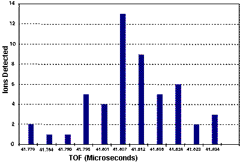

| 52 |
[ Part 1 | Part 2 ]
INTRODUCTION
The ion simulation software SIMION 3D is used to model the scattering of ions by grids within a reflectron TOFMS. Our purpose is to demonstrate the effects of ion scattering on the resolution and sensitivity of the instrument. This simulation demonstrates the use of SIMION software for the analysis of a common but difficult ion optics problem.
Background Software
SIMION (Scientific Instrument Services, Inc.) is the industry standard for the simulation of ion optics. The original software was developed in 1977 by D. C. McGilvery at Latrobe University, Australia. During the last 19 years, it has been greatly expanded by David Dahl at the Idaho National Engineering Laboratory and now shares little with the first versions [1]. The program now supports full three dimensional modeling and potential arrays of up to 10,000,000 points. Specific features include, dynamic parameter variation, time dependent potentials, and space charge effects.
The simulation involves the use of "instances". These are three dimensional electrostatic and magnetic arrays used to model sections of an instrument. Each instance is independently defined and modeled. This allows the user to take advantage of symmetry elements that may vary between different sections of the instrument. It also permits the use of higher resolution arrays in more critical areas. Instances are positioned on an "ion optics bench" for the simulation of an entire system. For example, in a reflectron TOFMS, the source, reflector, and detector can each be modeled separately and then positioned on an optics bench. The position and angle of each instance can be selected so as to easily examine a variety of instrument geometries.
SIMION has a powerful user programming interface. This permits the simulation of time dependent fields (i.e. ion traps). It also enables the modeling of random effects such as collisions, ionization, and velocity distributions. We have previously shown how this feature can be used to examine the passing of an ion through grids (or mesh). [2] This requires a Monte Carlo simulation since the ion may pass through any part of a grid opening.
The Problem
Fine mesh or grids are commonly used to establish and divide acceleration regions in TOFMS. When different electric fields are placed on each side of a grid, a small electrostatic lens is produced at each opening. The effects of these lenses on the ion throughput and time resolution of instruments has been a point of controversy. Two published papers have indicated that the grids have little or no impact on the performance of the instrument. [3,4] Two others suggest that grids can have a considerable effect and in some cases may even be the limiting factor in instrument resolution. [5,7] We have used SIMION 3D v.6.0 to simulate the flight of ions through individual grid holes. Our initial results showed that there could be a considerable effect on the trajectory of the ion. The scattering of ions depended greatly on the electric fields and grid density. Table 1 shows these results for an ion passing between a field free and high field region. Effects were most pronounced when an ion was decelerated after passing through a grid. In these cases, the perpendicular velocity introduced by the field non-homogeneity at the grid could become a significant fraction of the total velocity. Our earlier work was limited to the simulation of an ion passing through a single grid. It was important, however, to examine the consequences of grid scattering in an entire instrument, since our results showed that deceleration after passing through a grid could magnify the effects. Our current work simulates the effects of grid scattering on a TOF Reflectron. This is accomplished through the use of an advanced user program and is fully described below. The grid material most commonly used is produced by Buckbee Meers of St. Paul, MN. Their products include a wide variety of wire densities and transmission. The most popular meshes have wire densities of 70, 117.6, 333, and 1000 lines per inch.
Table 1: Deflection Angles
| Starting
Region |
Grid Size
(lines/inch) |
Field
Strength (V/cm) |
Deflection
Angle.*a (deg.) |
Perpendicular
Velocity *a (%) |
Deflection
Angle.*b (deg.) |
Perpendicular
Velocity *b (%) |
| Field Free | 70 | 2000 | 2.33 | 4.0 | 0.91 | 1.6 |
| 117.6 | 2000 | 1.12 | 2.0 | 0.40 | 0.70 | |
| 333 | 2000 | 0.351 | 0.61 | 0.11 | 0.20 | |
| 70 | 10,000 | 3.62 | 6.3 | 0.99 | 1.7 | |
| 117.6 | 10,000 | 2.67 | 4.6 | 0.61 | 1.1 | |
| 333 | 10,000 | 2.58 | 4.5 | 0.45 | 0.80 | |
| High Field | 70 | any | 0.153 | 0.27 | 0.153 | 0.27 |
| 117.6 | any | 0.091 | 0.16 | 0.091 | 0.16 | |
| 333 | any | 0.033 | 0.058 | 0.033 | 0.058 |
*Average Values: (*a) At 1.5 times grid wire spacing. and (*b) After 1.0 cm.
Simulation

Figure 1- 3D View of a Reflectron TOFMS
In this work, we examine the cumulative effects of grid scattering in a Reflectron TOFMS. We report results for 70 line per inch grids at 2 different drift energies; 2000 and 10,000 eV. The mass of the ion is assumed to be 100 amu. A Monte Carlo approach is used to simulate the possibilities of an ion passing through any part of a grid opening or striking a grid. A three dimensional view of the simulated instrument is shown in Figure 1. A two stage source and a two stage reflector were used. In the source, the ion was assumed to start at the first electrode and be given 10% of its drift energy in the first stage. Most of the acceleration, therefore, took place in the second stage. Each source region was 12.5 mm long. The ion mirror (or reflector) was positioned 475 mm from the source at an angle of 1.0 degrees from the primary axis of the source (z-axis). The reflector had regions of 12 (front) and 127 mm (back). The back of the reflector was held at a potential 1% greater than the starting point of the ions in order to turn them back toward the detector. The center grid in the reflector was held at a potential equivalent to 90% of the drift energy. A 20 mm diameter detector was placed 500 mm from the reflector. Each of the instrument elements, source, reflector, and detector, were modeled as a separate instance and placed on the Ion Optics Bench. They were positioned such that, when the effects of grids were not considered, an ion originating from the source would strike the center of the detector. This is illustrated by the ion trajectory shown in Figure 2.

Figure 2 - Path of ion Without Grid Effects
The simulation of a small section of grid occurred in a fourth instance. This instance was modeled with a very high density array of 0.004 mm between potential array points. The entire instance required over 20 million points. While the grid instance is included in Figure 2, it is too small to be seen on the scale shown. Figure 3 shows a close up view. The grid instance included nine grid holes and the volume within a distance of 1.5 grid holes on either side of the grid. At that distance, the electric field was assumed to be uniform and a pair of solid electrodes were used to establish the fields in either direction. (One of these electrodes has been remove in Figure 3 to view the grid more clearly.) The simulation involved flying a large number of ions through the instrument. Every time an ion experienced a large change in electric field, a user program was used to "jump" the ion to the grid instance. The ion was placed in a random position just above the plane of one of the solid electrodes. The electrical fields within the grid instance were then adjusted to reflect the fields that the ion had experienced just before it jumped. Thus, the single grid instance could be used to simulate all of the grids within the instrument. Since the ion was placed in a random position along a side of the grid instance, the simulation was able to account for ions passing through different parts of a grid opening. In the current calculation only the field along the z-axis is considered so it is assumed that grids are normal to this axis.

Figure 3 - Small Section of Grid
Results



Figure 4. Paths of Ions with Grid Effects
Figure 4 shows the paths of several ions with grid jumping active. Each time the ion encounters a grid it jumps to a point at the lower right of the figure where the very small grid instance is positioned. After passing through the grid instance, the ion is then placed back in its original position. This occurs once for each of the six grid transitions. Approximately 31% of the ions collide with a part of the grid in the grid instance. This is to be expected as a consequence of the 90% transmission rate of these grids. It was found that only a small fraction of the ions reached the detector and these were distributed in time by approximately 20 nanoseconds. Since the initial conditions for all ions was identical, this time distribution was entirely due to grid effects. Those ions that did not hit the detector reflector, or grid flew out of the simulation region. At 2000 eV drift energy, a surprisingly large fraction (93%) missed the detector. 26% struck the interior sides of the reflector as shown in Figure 4A. The path of these ions had changed so much due to the grid effects that the perpendicular velocity component dominated their trajectory in the second region of the reflector. The fate of 10,000eV ions was not statistically different.

Figure 5
Figure 5 shows the distribution in arrival times that was recorded for 2000 eV ions. This temporal broadening is entirely due to grid effects and is significant relative to the total time of flight of the ion. The resulting peak width limits the resolution of the instrument. Note that this temporal distribution is dependent on the actual voltages used within the instrument. The fields we have used are intended only as an example. This simulation is available on the Internet for the simulation of particular instruments.
Conclusions
Grid scattering is having a dramatic effect on both the sensitivity and resolution of the instrument. In agreement with our previous results, the deceleration of an ion after it has passed through a grid increases the impact of the grid on the flight of the ion. These results raise important questions as to the selection and use of grids in reflectron instruments.
Future work We are currently examining various combinations of grid size and gridless optics to determine the optimal arrangement for instrument resolution and sensitivity. It has been suggested that the use of higher density (greater lines per inch) grid might improve sensitivity despite the lower transmission rate for each individual grid. [6] Our results will be reported at PittCon97.
Additional details on SIMION 3D are available on our web site at http://www.simion.com .
References
1. David A. Dahl 43ed ASMS Conference on Mass Spectrometry and Allied Topics, May 21-26 1995, Atlanta, Georgia, 717.
2. S. M. Colby; C. W. Baker; J. J. Manura Proc, 41st ASMS Conf. 1996. (Available at www.sisweb.com application note #47)
3. X. Tang, R. Beavis, W. Ens, F. Lafortune, B. Schueler and K. G. Standing, Int. J. Mass Spectrom. Ion Processes, 85 (1988) 43.
4. D. Ioanoviciu, Int. J. Mass Spectrom. Ion Processes, 131 (1994) 43.
5. T. Bergmann, T. P. Martin and H. Schaber, Rev. Sci. Instrum., 60 (1989) 347.
6. R. C. King, R. Goldschmidt and K. G. Owens 39th ASMS Conference on Mass Spectrometry and Allied Topics, May 19-24 1994, Nashville, TN, 717.
7. V.V. Laiko and A.F. Dodonov, Rapid Comm. Mass Spectrom. 8 (1994) 720-726
[ Part 1 | Part 2 ]